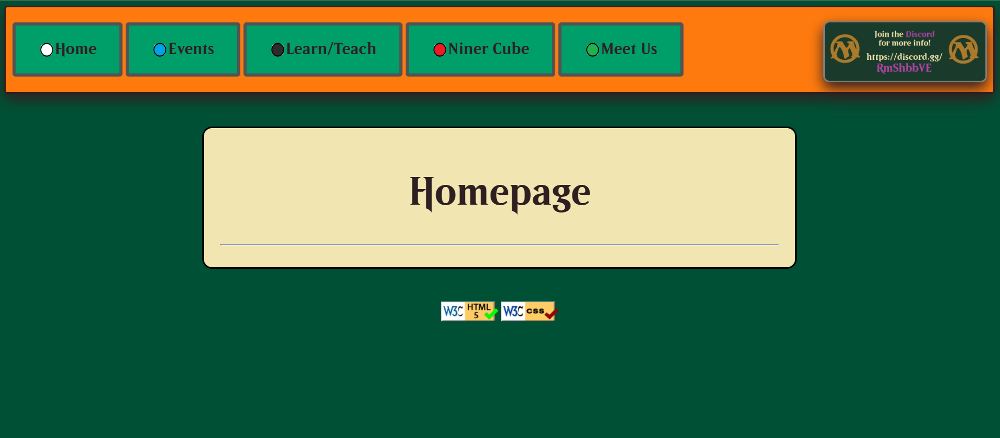

Screenshot of Shane's Client Page about surf fishing
The contrast of the page is good. All content on the page is easily readable and easy on the eyes
The navigation panel is consistent and coherent
The elements on the pages are beautifully aligned to the centerd
The spacing and proximity between content is well established and consistent
Overall this website is well designed. Some video buttons do not work right now (easy fix)
Peer review #2 - Evan Schlee

Screenshot of Shane's Client Page about surf fishing
The contrast of emerald green background, orange nav panel and black text is good. Perhaps a different
color text would be nice
Buttons are given good 3d effects
The learn/ teach page utilizes repitition in its design. It interacts similarly to other elements and
feels right
The elements on the pages are consistently aligned. I wish the nav was centered, but there is an option
of adding more buttons